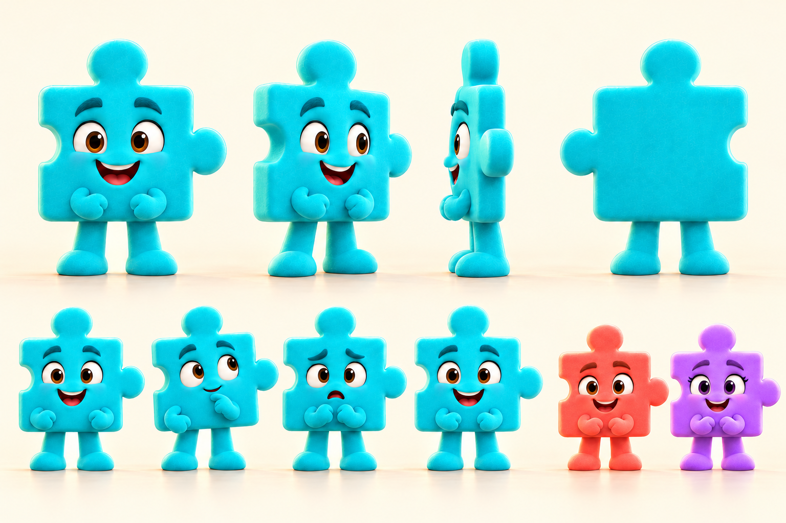
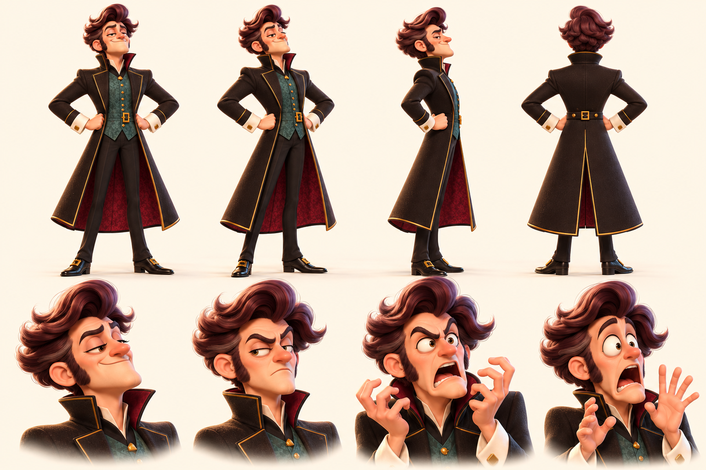
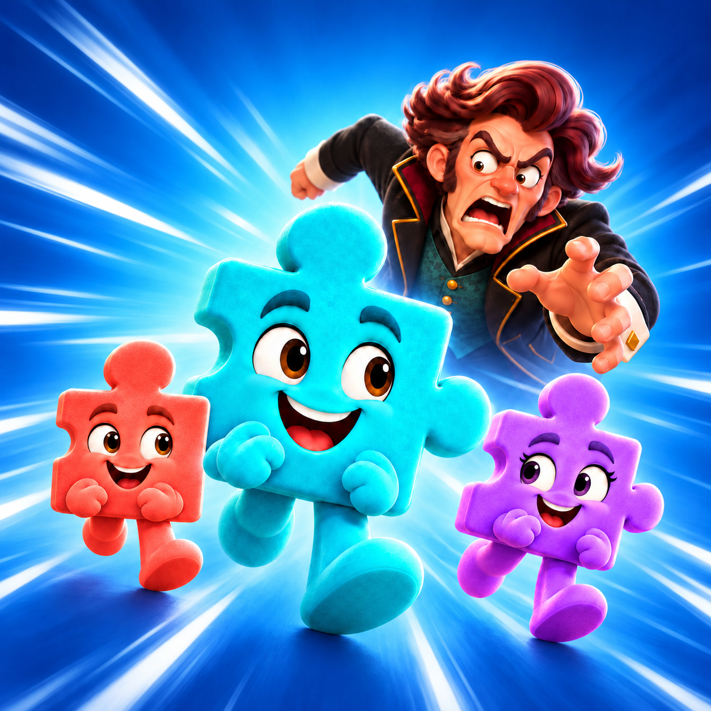
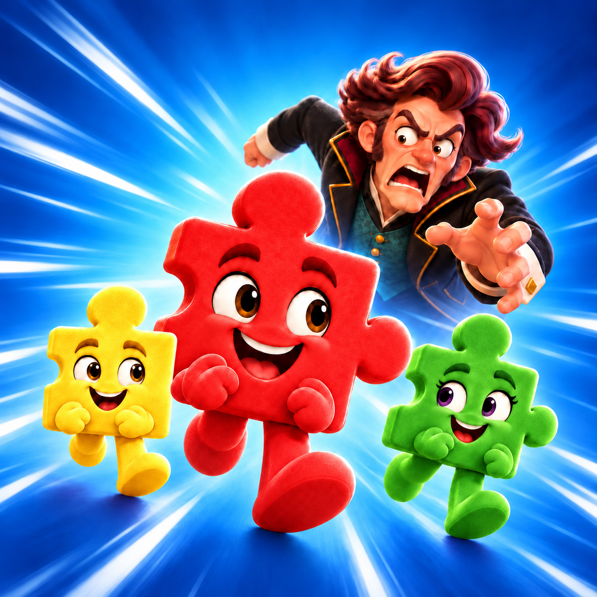
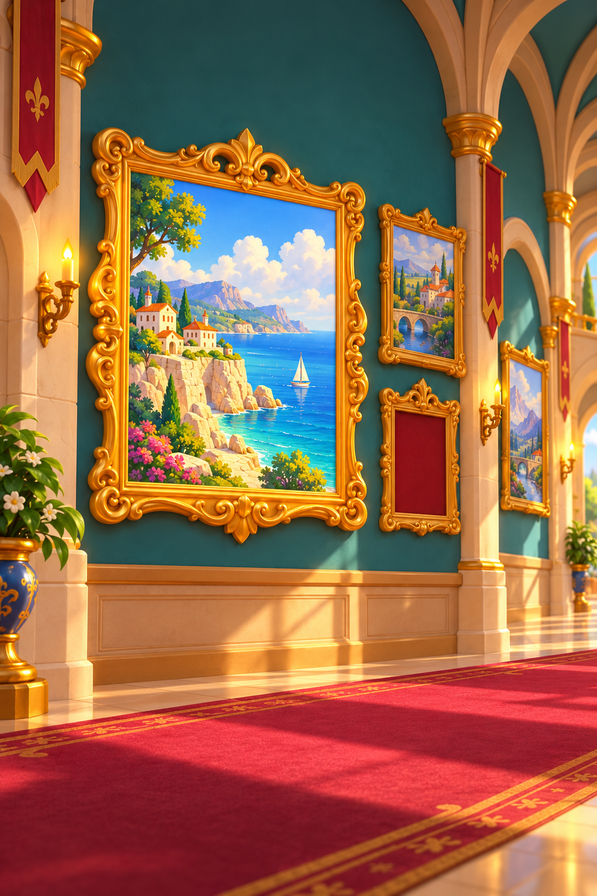
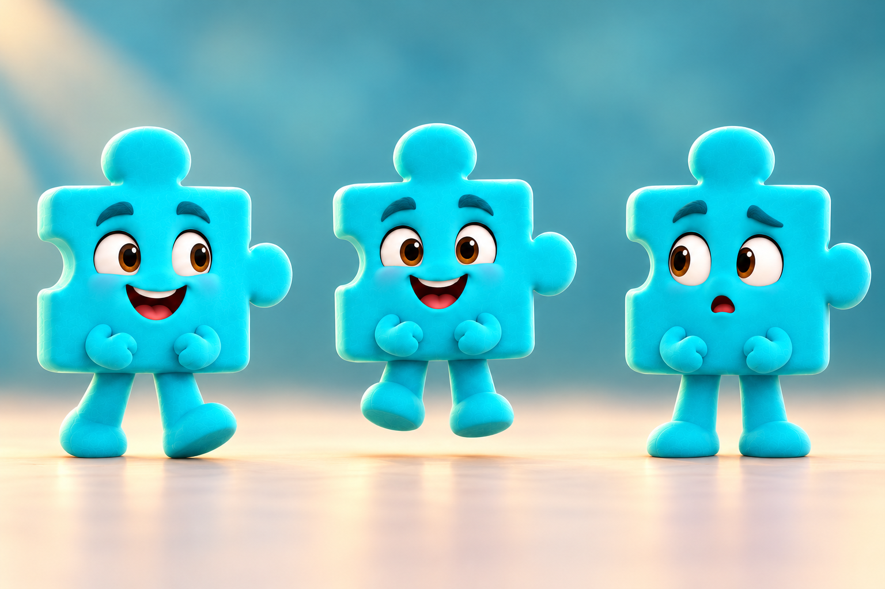

Reverse Solver — Görsel inceleme
Korunan referanslar ve yeni paralel çalışma çıktıları. Yeni görseller değerlendirme adayıdır; henüz nihai onaylı değildir.
Korunan güncel karakterler

Jiggles — güncel çalışma kartı; merkezli geometri ve ayrı uzuvlar.
Baron — seçilen 3 numaralı karakterden çalışma kartı.İkon

ONAYLI İKON — 2-market-mavi-v01.png.
Seçilmeyen renk denemesi — arşiv.Seçilen koridor 2 — ortalanmış ana tablo ve yan blok

İlk seçilen kaynak — korunuyor. Zeyd'in seçtiği v04 — ana çerçeve ve sağ komşu bloktaki küçük tablo. Menü tabanı olarak aynen korundu. v05 daha sonraki alternatif olarak arşivde.
Zeyd'in seçtiği v04 — ana çerçeve ve sağ komşu bloktaki küçük tablo. Menü tabanı olarak aynen korundu. v05 daha sonraki alternatif olarak arşivde.Jiggles poz kontrolü

Jiggles ajanı — geometri/uzuv doğrulama adayı; karakter değişikliği değil.
Bu dosya yerel inceleme içindir. Oyuna entegrasyon veya yayın içermez.